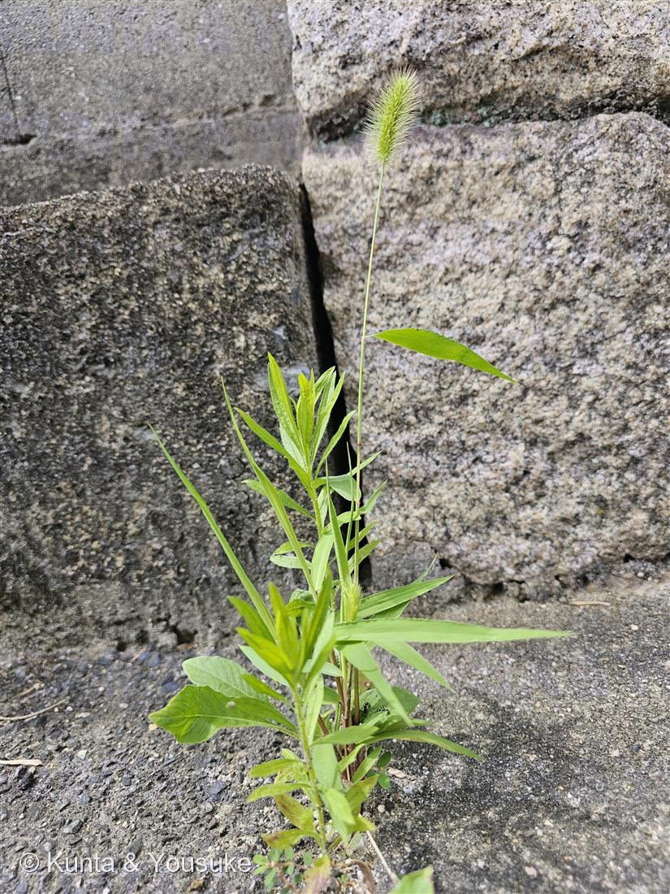

エノコログサ
Setaria viridis (L.) P.Beauv.
別名 · ネコジャラシ／狗尾草（えのころぐさ）
イネ科 · Poaceae（エノコログサ属）
学名の由来
- Setaria（セタリア）＝ラテン語 seta（剛毛）から。穂の目立つ剛毛（芒＝のぎ）にちなむ。
- viridis（ウィリディス）＝ラテン語で「緑の」。あの緑のブラシ穂の色。
- 和名エノコログサ＝「狗尾草（いぬころぐさ）」＝穂が子犬のしっぽに似ることから。別名ネコジャラシは、穂で猫をじゃらす遊びから。
この植物のこと
- イネ科エノコログサ属の一年草。夏〜秋、道ばた・空き地・畑・コンクリの隙間まで、どこでも生える代表的な雑草。この子も街なかの石の目地から立ち上がっていた。
- 緑のブラシ状の穂は、たくさんの小さな花（小穂）と、その基部から伸びる長い剛毛（芒）でできている。ふさふさの正体は、この芒。
- 穀物のアワ（粟）は、このエノコログサを改良した近縁の栽培型。ただの雑草に見えて、人の主食の親戚なんだ。
- 強い日ざしと乾燥に強いC4植物（暑さに強い効率のいい光合成）。だから真夏のカンカン照りのコンクリの隙間でも、元気いっぱい。
- No.012 アサガオを登録したときの「おまけ植物」だった子。ついに出会えて、みつけた✓。